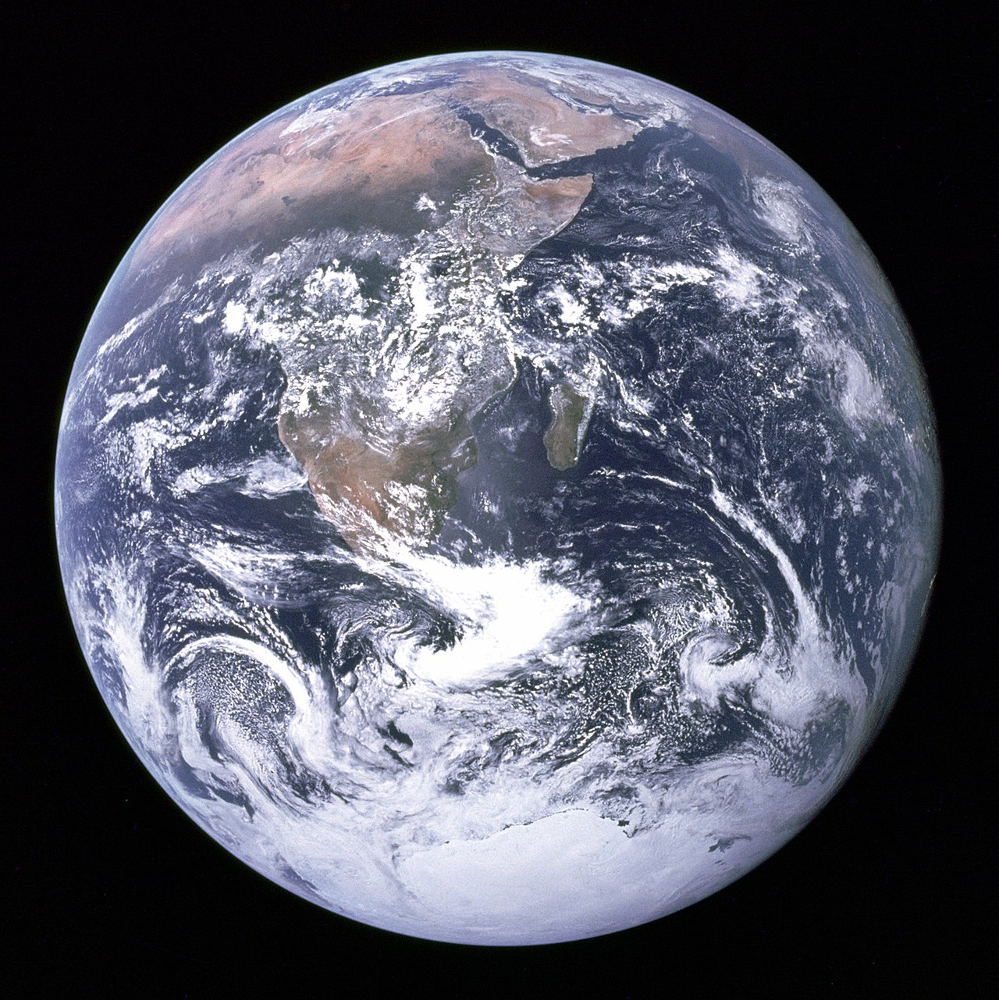

The Gaia hypothesis, also known as the Gaia theory, Gaia paradigm, or the Gaia principle, proposes that living organisms interact with their inorganic surroundings on Earth to form a synergistic and self-regulating, complex system that helps to maintain and perpetuate the conditions for life on the planet.

The hypothesis was formulated by the chemist James Lovelock and co-developed by the microbiologist Lynn Margulis in the 1970s. Lovelock named the idea after Gaia, the primordial goddess who personified the Earth in Greek mythology. The suggestion that the theory should be called "the Gaia hypothesis" came from Lovelock's neighbour, William Golding. In 2006, the Geological Society of London awarded Lovelock the Wollaston Medal in part for his work on the Gaia hypothesis.